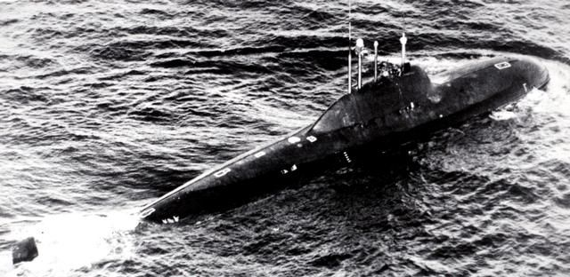

Подводный истребитель
Читается подряд. Нажми на удар — откроется подробный разбор с источниками.
В 1959 году ленинградский инженер А. Б. Петров предложил подводный истребитель: маленький, автоматический и быстрее 40 узлов.Узнать подробнееСвернуть
По замыслу, лодка водоизмещением около 1500 тонн за короткое время выходит в нужную точку океана, атакует подводного или надводного противника, а заметив торпедную атаку — даёт залп и уходит от торпед.
Главным конструктором стал Михаил Русанов, проект вело СКБ-143 — сегодня Санкт-Петербургское морское бюро машиностроения «Малахит».
Источники: сборник «Подводные лодки: история развития» (сост. В. П. Власов), «Атомные подводные лодки проекта 705»; «Адмиралтейские верфи», «Проект 705, „Лира“».
На других атомных лодках служили 80–100 человек. В задание на «Лиру» записали шестнадцать — и только офицеров.Узнать подробнееСвернуть
Экипаж сократили автоматикой. В ходе проектирования он всё же вырос до 31 человека: шесть техников-мичманов и один матрос, который был коком и заодно дневальным. Справочная таблица сборника «Подводные лодки: история развития» даёт экипаж в 32 человека.
Источники: «Страна Росатом», «Сотворение „Лиры“», 16.12.2021; сборник «Подводные лодки: история развития».
В отсеках вахту не несли: система «Аккорд» сводила всё на центральный пост. Боевая смена — восемь человек.Узнать подробнееСвернуть
Боевая информационно-управляющая система «Аккорд» следила за обстановкой и реактором, гидролокатор и оружие работали самостоятельно, механизирован был даже камбуз. Центральный пост был набит индикаторами от палубы до обшивки. Моряки прозвали эти лодки «автоматами».
Источники: «Страна Росатом», 16.12.2021; «Адмиралтейские верфи»; сборник «Подводные лодки: история развития».
Корпус сварили из титанового сплава ЦНИИ «Прометей»: он легче стали, прочнее её и почти не магнитится.Узнать подробнееСвернуть
Сплав разработали в ЦНИИ «Прометей» под руководством И. В. Горынина. Титан оказался капризным: его трудно варить и обрабатывать. На головной лодке потом нашли трещины сварного корпуса.
Источники: «Адмиралтейские верфи»; Межрегиональное общественное движение ветеранов атомной энергетики и промышленности, «Чудо инженерии — подлодки проекта 705 „Лира“»; сборник «Подводные лодки: история развития».
Реактор охлаждала не вода, а расплав свинца и висмута. Поэтому «Лира» разгонялась до полного хода за минуту.Узнать подробнееСвернуть
Находка дняЛодкам с водо-водяными реакторами перед полным ходом нужен особый переход установки на повышенные параметры. «Лире» он был не нужен: свинцово-висмутовая установка давала полный ход в течение минуты, с почти «самолётным» разгоном.
Жидкий металл в реакторе до этого пробовали на одной опытной лодке проекта 645, а «Лиры» строили серией.
Попробуй сам в модели ниже: зайти в хвост лодке противника.
Источники: сборник «Подводные лодки: история развития»; «Страна Росатом», 16.12.2021; «Адмиралтейские верфи».
Под водой «Лира» давала 41 узел — около 76 километров в час.Узнать подробнееСвернуть
Полная подводная скорость по справочной таблице — 41 узел, «Страна Росатом» пишет «более 40 узлов». 76 километров в час — наш перевод: узел — это 1,852 километра в час. Скорость лодки была сравнима со скоростью противолодочных торпед.
Источники: сборник «Подводные лодки: история развития»; «Адмиралтейские верфи»; «Страна Росатом», 16.12.2021.
На полном ходу она разворачивалась на 180 градусов и через 42 секунды уже шла обратно.Узнать подробнееСвернуть
Контр-адмирал А. С. Богатырев, командовавший К-123, вспоминал, что лодка разворачивалась «на пятачке». Командиры А. Ч. Аббасов и А. Ф. Загрядский описывали манёвр: разгон с погружением сбивал со следа противника, который слушал «Лиру», и она «по-истребительному» заходила ему в хвост.
Источники: сборник «Подводные лодки: история развития»; «Страна Росатом», 16.12.2021; «Адмиралтейские верфи».
В начале 80-х «Лира» 22 часа держалась в хвосте атомохода НАТО. Сбросить её он так и не смог.Узнать подробнееСвернуть
Лодка шла в кормовом секторе чужого атомохода в Северной Атлантике. Командир противника отчаянно пытался оторваться, но слежение прекратили только по приказу с берега. «Страна Росатом» называет срок в 20 часов, сборник — 22 часа.
Источники: сборник «Подводные лодки: история развития»; «Страна Росатом», 16.12.2021.
Впервые в мире на подлодке стояла всплывающая рубка: в ней с предельной глубины мог спастись весь экипаж.Узнать подробнееСвернуть
Обитаемый отсек на лодке был один, и камера стояла прямо над ним. Она всплывала даже при большом крене и дифференте и спасала экипаж «сухим способом», без выхода в воду.
Источники: «Адмиралтейские верфи»; сборник «Подводные лодки: история развития»; МОД ветеранов атомной энергетики; «Страна Росатом», 16.12.2021.
Расплав свинца и висмута застывает при 145 °C. В базе реактор держали горячим, иначе металл каменел в трубах.Узнать подробнееСвернуть
Это главная цена скорости. Первый контур нужно было постоянно держать горячим, следить за сплавом и регулярно очищать его от окислов. С заглушённым реактором лодке в базе требовался внешний источник энергии. Идею второго, «берегового» экипажа на практике так и не осуществили.
Источники: «Страна Росатом», 16.12.2021; сборник «Подводные лодки: история развития».
Головная К-64 боевой так и не стала: в 1972 году в отсек вытекли сотни литров сплава, и лодку списали.Узнать подробнееСвернуть
К-64 заложили 2 июня 1968 года в Ленинграде, на том же стапеле, где строили «Аврору», и спустили на воду 22 апреля 1969 года. В строй она вступила 31 декабря 1971 года. В феврале 1972-го вышла из строя ещё одна петля реактора, 700–800 литров сплава попали в отсек. Лодку решили не восстанавливать. Первый командир, капитан 1-го ранга А. С. Пушкин, позже получил орден Ленина.
Конструкторы учли урок: у следующих лодок реакторный отсек удлинили на 1,2 метра и переделали парогенератор.
Источники: «Страна Росатом», 16.12.2021; сборник «Подводные лодки: история развития»; «Адмиралтейские верфи».
За двадцать с лишним лет службы на «Лирах» никто не погиб в борьбе за живучесть, ни одна лодка не потеряна.Узнать подробнееСвернуть
Всего построили семь лодок проектов 705 и 705К. Командир К-123 капитан 2-го ранга А. Ч. Аббасов за освоение принципиально нового корабля в 1984 году стал Героем Советского Союза.
Источники: «Страна Росатом», 16.12.2021; сборник «Подводные лодки: история развития»; МОД ветеранов атомной энергетики.
За скорость проект 705 занесли в Книгу рекордов Гиннесса.Узнать подробнееСвернуть

Лодка проекта 705 в море, снимок начала 1980-х. Фото Министерства обороны США, общественное достояние. Об этом пишет «Страна Росатом». Рубку «лимузинного типа», плавно переходящую в корпус, отработали гидродинамики. Обводы почти не отражали сигналы гидролокаторов, и атаковать «Лиру» с активной гидроакустикой было трудно.
Источники: «Страна Росатом», 16.12.2021; сборник «Подводные лодки: история развития».